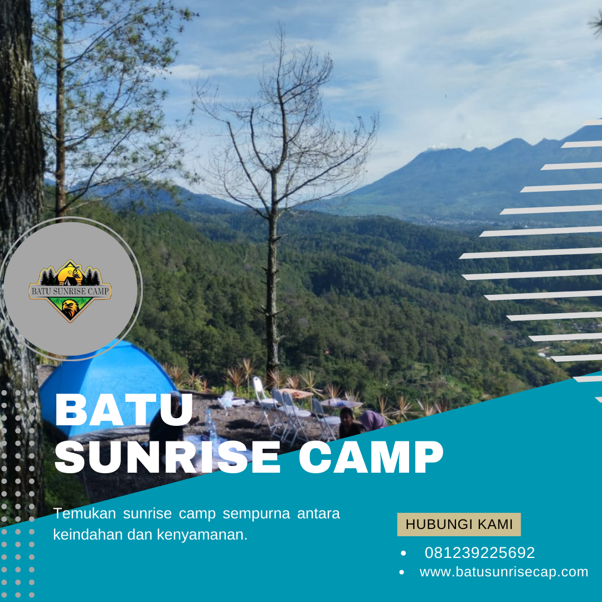

Kawasan Batu Malang di Jawa Timur merupakan salah satu destinasi camping paling populer di Indonesia. Terletak di ketinggian 700-1.700 meter di atas permukaan laut, kawasan ini menawarkan udara segar pegunungan yang menyejukkan, pemandangan alam yang memesona, serta berbagai spot camping yang menarik untuk dijelajahi. Bagi Anda yang sedang mencari lokasi camping terbaik di kawasan Batu Malang, artikel ini akan memberikan rekomendasi lengkap beserta keunggulan masing-masing spot.
Sebagai pengelola Batu Sunrise Camp, kami telah melakukan survei mendalam terhadap berbagai lokasi camping di kawasan ini. Kami menyajikan informasi berdasarkan pengalaman langsung dan masukan dari ratusan pengunjung yang telah menikmati keindahan alam Batu Malang melalui kegiatan camping.
Mengapa Batu Malang Cocok untuk Camping?
Sebelum membahas rekomendasi spot, penting untuk memahami mengapa kawasan Batu Malang begitu ideal untuk kegiatan camping. Pertama, kondisi geografis Batu yang berada di dataran tinggi memberikan suhu yang sejuk bahkan cenderung dingin, terutama pada malam hari. Suhu rata-rata berkisar antara 15-25 derajat Celsius, sangat kontras dengan panasnya kota-kota di dataran rendah.
Kedua, keindahan alamnya yang luar biasa. Dikelilingi oleh gunung-gunung seperti Gunung Arjuno, Gunung Welirang, dan Gunung Panderman, pemandangan di kawasan Batu sungguh memanjakan mata. Hutan pinus yang lebat, kebun apel yang hijau, dan air terjun yang jernih menjadi latar belakang sempurna untuk aktivitas camping.
Ketiga, infrastruktur dan aksesibilitas yang baik. Kawasan Batu mudah dijangkau dari Kota Malang (sekitar 20 km) maupun dari Surabaya (sekitar 90 km), dengan kondisi jalan yang umumnya baik dan memadai untuk kendaraan pribadi.
"Batu Malang bukan hanya sebuah kota wisata, tetapi juga surga tersembunyi bagi para pecinta camping yang mencari ketenangan dan keindahan alam yang otentik." — Tim Batu Sunrise Camp
Batu Sunrise Camp — Spot Camping Premium Nomor Satu
Batu Sunrise Camp menempati posisi pertama dalam rekomendasi kami, bukan tanpa alasan. Lokasi camping premium ini menawarkan kombinasi sempurna antara keindahan alam, fasilitas lengkap, dan pelayanan profesional yang sulit ditemukan di tempat lain.
Keunggulan Lokasi
Terletak di ketinggian yang memberikan akses langsung ke panorama matahari terbit yang menakjubkan, Batu Sunrise Camp menjadi pilihan utama bagi mereka yang ingin menyaksikan keajaiban sunrise dari atas awan. Pemandangan gunung dan lembah yang terbentang luas menjadi latar belakang yang sempurna untuk berbagai aktivitas outdoor.
- Sunrise Point Premium — Akses langsung ke titik terbaik untuk menyaksikan matahari terbit
- Lahan Camping Rata — Area camping yang sudah diratakan dan ditata dengan baik
- Fasilitas MCK Bersih — Toilet dan kamar mandi dengan air bersih mengalir
- Area Parkir Luas — Parkir aman untuk roda dua dan empat
- Area Api Unggun — Spot yang aman untuk api unggun bersama
- Tim Profesional — Guide dan staff berpengalaman siap membantu
Baca Juga:
Tips Camping di Batu Malang agar Pengalaman Makin Berkesan Panduan Camping Keluarga di Batu Sunrise CampPaket yang Tersedia
Batu Sunrise Camp menyediakan lima pilihan paket camping yang dapat disesuaikan dengan kebutuhan dan budget Anda. Mulai dari Paket Reguler untuk camping dasar, Paket Premium untuk pengalaman lengkap, Paket Grup untuk rombongan, Paket Keluarga yang ramah anak, hingga Paket Honeymoon untuk pasangan. Setiap paket dirancang dengan mempertimbangkan kenyamanan dan kepuasan pengunjung, sehingga Anda bisa memilih paket yang paling sesuai dengan preferensi Anda.

Area camping ground Batu Sunrise Camp — lahan rata, tertata rapi, dan dilengkapi fasilitas lengkap.
Spot Camping di Sekitar Gunung Panderman
Gunung Panderman dengan ketinggian 2.045 mdpl merupakan salah satu gunung yang populer di kawasan Batu. Camping di sekitar Gunung Panderman memberikan pengalaman yang unik karena Anda bisa melakukan pendakian sekaligus camping di ketinggian. Jalur pendakian Panderman relatif mudah dan cocok untuk pemula, dengan waktu tempuh sekitar 2-3 jam dari basecamp.
Di puncak atau pos terakhir sebelum puncak, terdapat area datar yang cukup luas untuk mendirikan beberapa tenda. Dari sini, Anda bisa menikmati pemandangan Kota Batu dan Malang dari ketinggian, serta menyaksikan sunrise yang memukau di pagi hari. Namun perlu diingat, camping di Gunung Panderman membutuhkan persiapan fisik yang lebih karena Anda harus membawa sendiri semua perlengkapan camping ke atas.
Area Camping di Coban Rondo
Coban Rondo, air terjun setinggi 84 meter yang terletak di Pujon, Batu, juga memiliki area camping yang menarik di sekitarnya. Suasananya sangat asri dengan pepohonan tinggi dan suara gemericik air yang menenangkan. Area camping di Coban Rondo cocok untuk Anda yang menyukai suasana hutan yang lebat dan sejuk.
Kelebihan camping di area Coban Rondo adalah akses ke air terjun yang bisa dinikmati kapan saja, udara yang sangat segar karena dikelilingi hutan lebat, serta fasilitas wisata lain di sekitarnya yang bisa dikunjungi seperti Taman Labirin dan Flying Fox. Namun, area ini cenderung lembap sehingga Anda perlu membawa perlengkapan yang tahan kelembapan.
Spot Camping di Kawasan Selecta
Kawasan Selecta dan sekitarnya juga menawarkan beberapa spot camping yang menarik. Dengan ketinggian sekitar 1.000 mdpl, area ini memiliki pemandangan yang indah ke arah lembah dan pegunungan. Beberapa pengelola wisata di kawasan ini menyediakan lahan camping dengan fasilitas yang cukup memadai.
Keunggulan camping di kawasan Selecta adalah dekat dengan berbagai objek wisata lain seperti Pemandian Air Panas Selecta, kebun apel, dan taman-taman tematik. Ini membuat camping di sini sangat cocok untuk mereka yang ingin menggabungkan aktivitas camping dengan wisata lainnya selama berada di Batu Malang.
Area Camping di Sekitar Cangar
Cangar terkenal dengan sumber air panasnya yang berasal dari aktivitas vulkanik Gunung Welirang. Area camping di sekitar Cangar menawarkan pengalaman unik karena Anda bisa menikmati rendaman air panas alami setelah seharian beraktivitas di alam terbuka. Suhu di kawasan Cangar sangat dingin, bahkan bisa mencapai di bawah 10 derajat Celsius pada dini hari.
Camping di Cangar sangat cocok untuk rombongan yang ingin menikmati sensasi camping di suhu ekstrem dengan bonus pemandangan hutan pinus yang rimbun. Pastikan membawa perlengkapan tidur yang ekstra hangat jika berencana camping di area ini, karena suhu malam bisa sangat menusuk tulang.

Pemandangan sunrise yang menakjubkan — alasan utama mengapa banyak orang memilih camping di ketinggian Batu Malang.
Tips Memilih Spot Camping yang Tepat
Dengan banyaknya pilihan spot camping di kawasan Batu Malang, memilih yang tepat bisa menjadi tantangan tersendiri. Berikut beberapa tips yang bisa membantu Anda dalam memilih spot camping yang sesuai dengan kebutuhan dan keinginan.
- Tentukan tujuan camping — Apakah untuk relaksasi, petualangan, atau gathering bersama keluarga/teman
- Pertimbangkan level pengalaman — Pemula sebaiknya memilih lokasi dengan fasilitas lengkap seperti Batu Sunrise Camp
- Cek ketersediaan fasilitas — Toilet, air bersih, dan keamanan adalah fasilitas minimum yang harus ada
- Sesuaikan dengan budget — Bandingkan harga dan fasilitas yang ditawarkan oleh masing-masing lokasi
- Baca ulasan pengunjung — Review dari pengunjung sebelumnya bisa memberikan gambaran yang akurat
- Hubungi pengelola — Pastikan untuk berkomunikasi dengan pengelola sebelum datang untuk konfirmasi ketersediaan

FAQ — Pertanyaan yang Sering Diajukan
Kesimpulan
Kawasan Batu Malang menyimpan banyak spot camping yang menarik dan memesona. Setiap lokasi memiliki keunikan dan keunggulannya masing-masing, sehingga Anda bisa memilih sesuai dengan preferensi dan kebutuhan. Dari sekian banyak pilihan, Batu Sunrise Camp menjadi rekomendasi utama kami karena menawarkan kombinasi terbaik antara keindahan alam, fasilitas lengkap, pelayanan profesional, dan harga yang terjangkau.
Jangan ragu untuk menghubungi kami di 081239225692 melalui WhatsApp untuk informasi lebih lanjut dan reservasi. Tim kami siap membantu merencanakan pengalaman camping terbaik untuk Anda di kawasan Batu Malang yang indah!